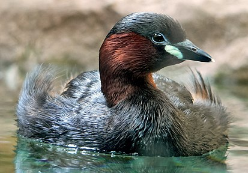
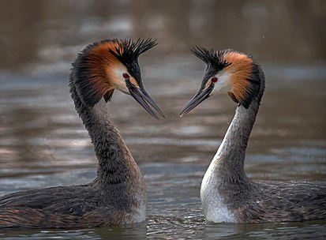

Поганковые — водоплавающие птицы, хорошие ныряльщики. И хотя неспециалисты часто принимают их за уток,
они не
имеют с последними ничего общего. Кроме того что они отличаются от уток внешне, они также значительно глубже
сидят на воде; это обусловлено тем, что кости у поганковых, в отличие от многих других птиц, в большинстве своём
не полые и в меньшей степени наполнены воздухом. Сильные короткие ноги отнесены далеко назад относительно
туловища, они помогают поганковым хорошо плавать и нырять. Пальцы ног не соединены перепонками, а оторочены с
боков жёсткими кожными, до сантиметра шириной лопастями, не менее удобными для гребли. При этом три пальца
направлены вперёд, а четвёртый — назад. Ногами поганковые гребут не под собой, как, например, утки или чайки;
ноги весьма эффективно работают сзади, образуя подобие корабельного винта.
Погружаются птицы одним резким броском, головой вперёд. При этом тело иногда полностью поднимается из воды.
Таким скачком поганковым удаётся нырять под практически прямым углом и погружаться на бо́льшую глубину. При этом
крылья остаются плотно прижатыми к телу, то есть поганковые не используют их под водой для передвижения, как,
например, пингвины или гагары. Ныряют как правило на 10—40 секунд, при этом более мелкие виды поганковых в
среднем меньше задерживается под водой, чем крупные. Бывали случаи погружения птиц под воду на одну минуту, а
максимальное время погружения в три минуты было зарегистрировано у красношейной поганки. Глубина погружения
обычно составляет 1—4 м, но известен случай обнаружения поганки, запутавшейся в сети на глубине 30 м.
Представители данного семейства способны преодолевать под водой в горизонтальном направлении довольно большие
расстояния.

Все поганковые образуют на время гнездования моногамные пары. Перед образованием пары происходит брачный ритуал,
который у одних видов, как например, у австралийской белоголовой поганки, может быть простым, а у других
достаточно сложным. Для филогенетиков сравнительный анализ брачного ритуала поганковых составляет особый
интерес. Мелкие виды, как например, малая поганка и малая пёстроклювая поганка, а также крупный вид, магеланнова
поганка (что, однако, является исключением) имеют простой брачный танец. В противоположность, у большинства
представителей рода поганки (Podiceps), а также у западной поганки можно наблюдать потрясающе зрелищные, очень
сложные брачные ритуалы.
Спаривание у поганковых происходит на суше. После этого начинается период, при котором партнёры охраняют
территорию будущего гнезда от представителей как своего, так и других видов, как, например, уток. Агрессивное
поведение у семи ранее названых видов, которые гнездятся в колониях, выражено намного слабее. Эти поганки могут
гнездиться не только рядом с представителями своего вида, но и рядом с другими птицами. В Европе такими птицами
могут быть обыкновенная чайка и белощёкая крачка. В таких смешанных колониях чайки и крачки заранее
предупреждают поганок о приближающихся врагах.
Из водных растений, веток и листьев оба партнёра сооружают плавучее гнездо, которое прикрепляется к какой-нибудь
растительности, как, например, заросли тростника. В среднем диаметр гнезда составляет 30 — 50 см, в редких
случаях — до одного метра. Мелкие виды строят, как правило, более мелкие гнёзда, однако на размер гнезда влияют
кроме того такие факторы, как волны или используемый для строительства материал.
Как уже упоминалось, существует два основных типа поганок: те, которые питаются рыбой и те, которые
специализируются на водных членистоногих.
Крупные виды поганок могут глотать рыбу длиной до 20 см и шириной до 7,5 см. Среди водных насекомых, которыми
питаются более мелкие представители поганок — личинки стрекоз, подёнок, веснянок, водные клопы и водные жуки.
Кроме того поганки едят водных улиток, ракообразных, головастиков и взрослых лягушек.
Часто в желудках у поганок можно обнаружить следы водных растений; последние скорее всего попадают туда
случайно. Мелкие камни поганки глотают в качестве гастролитов, для измельчения пищи. Иногда поганки глотают
собственные перья, прежде всего с груди или нижней части тела. Проглоченные перья обволакивают неперевариваемые
остатки пищи и впоследствии отрыгиваются наружу в виде комочков. Предположительно поганки делают это для того,
чтобы защитить стенки желудка от повреждений, которые могут нанести острые кости рыб.